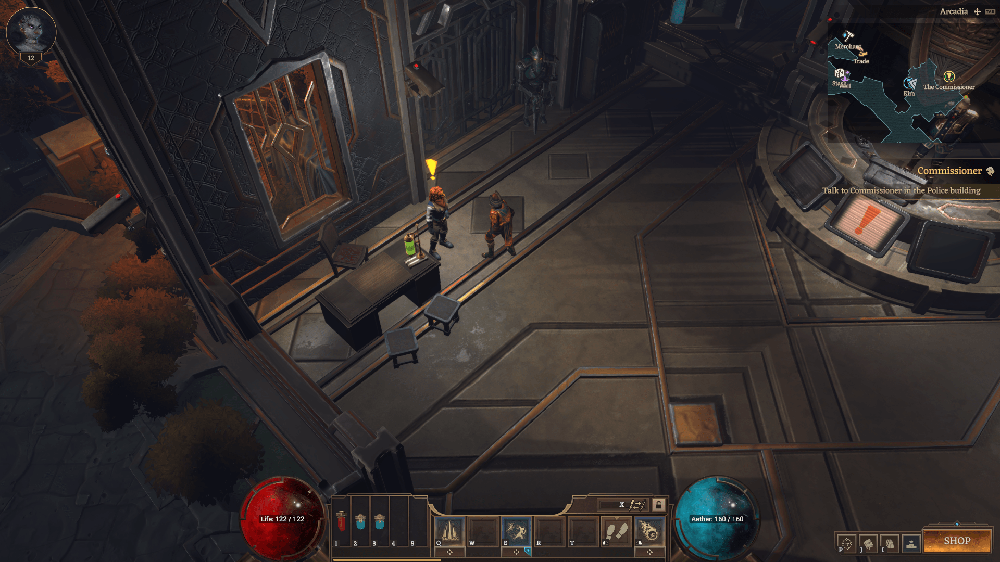
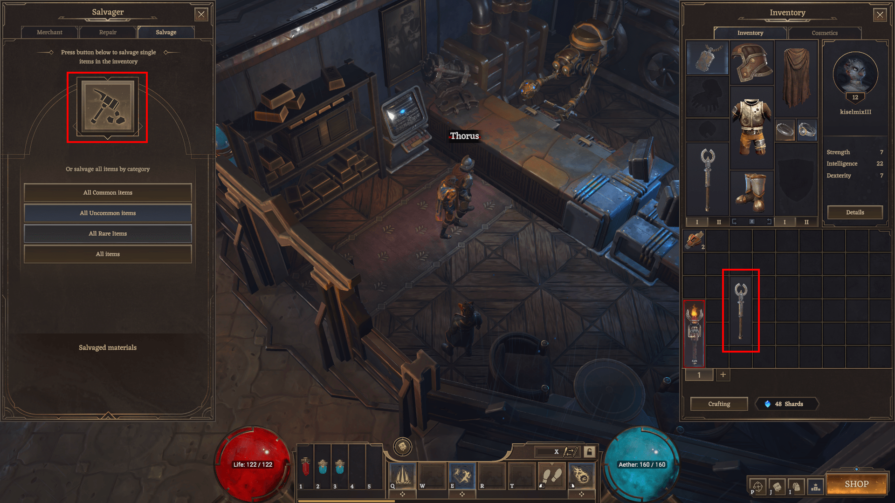
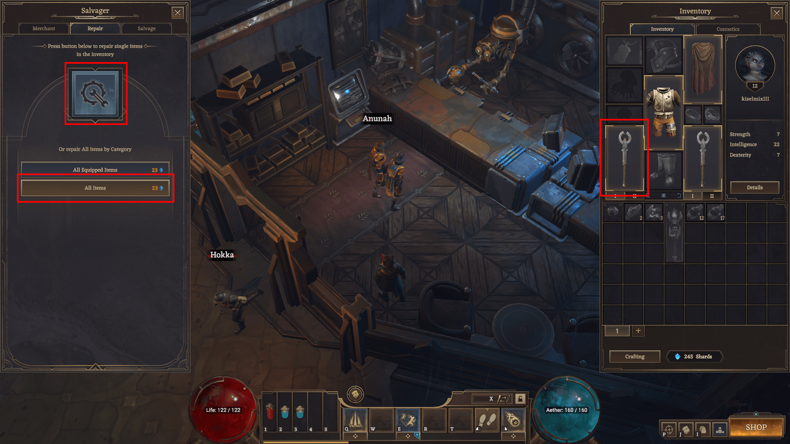
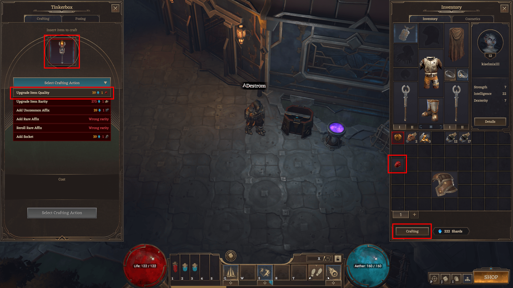
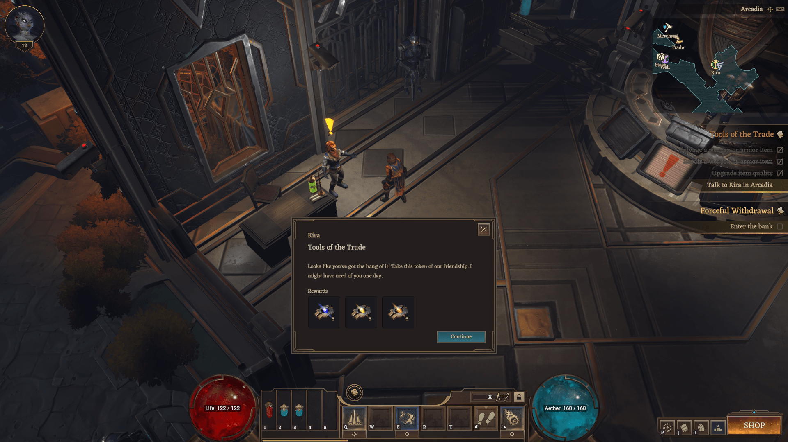

Tools of the Trade
Reward:
5 x Alchemist's Lesser Module,
5 x Alchemist's Module,
5 x Alchemist's Greater Module
Come to learn a thing about weapons?
Knowing how to maintain your gear can mean the difference between life or death.
Let's begin with teaching you how to repair and salvage your gear.
How to complete
1. Step 1 — Talk to Kira in Arcadia

2. Step 2 — Salvage a weapon or armor item
Go to the Merchant and break the unnecessary item. Click on the hammer and select the item you want to break.

3. Step 3 — Repair a weapon or armor item
Click the key icon and select the item you want to repair. Or click the "Repair All" button.

4. Step 4 — Upgrade item quality
Click the "Crafting" button in your inventory to open the Tinkerbox. Insert the item you want to improve. Make sure you have the required Chipped in your inventory.

5. Step 5 — Talk to Kira in Arcadia
